第 7 回 Sphinx 拡張を作る¶
所要時間の目安: 4 時間 / 前提: 第 1〜3 回・第 6 回
この回のゴール¶
Sphinx 拡張 の構造 (
setup(app)・イベント・ディレクティブ・設定値) を説明できる。自分で拡張を書き、実際にビルドして、動かせる。
DocsPipeline の 4 つの拡張 (
guard・prompt・mermaid・doxygen) を、設計の理由まで含めて説明できる。並列ビルド と、拡張が守るべき約束 (原子的な書き込み・共有状態) を説明できる。
偽物 (スタブ) を、Python の メタプログラミング (
__getattr__・メタクラス) で作る方法が分かる。拡張を テストする 方法 (偽のコマンド・サブプロセスのビルド) が分かる。
1. 拡張とは¶
拡張 は、setup(app) 関数を持つ Python のモジュールです。conf.py の extensions に 名前 を書くと、
Sphinx が読み込み、setup(app) を呼びます。拡張は、app を通して、Sphinx に 機能を登録 します。

登録するもの |
API |
使い道 |
|---|---|---|
ディレクティブ |
|
文書の中に、新しい ブロック の記法を足す ( |
ロール |
|
新しい 行内 の記法を足す |
設定値 |
|
利用者が |
イベントの受け取り |
|
ビルドの途中に、処理を差し込む |
静的ファイル |
|
HTML に CSS・JavaScript を足す |
返す辞書:
キー |
意味 |
|---|---|
|
拡張のバージョン |
|
並列で文書を読んでも安全か (後で詳しく) |
|
並列で書き出しても安全か |
2. 最小の拡張: guard¶
DocsPipeline で、いちばん小さい拡張です。
# 引用: docspipeline/guard.py::_raise_config_error
def _raise_config_error(app: Sphinx, config: Any) -> None:
if config.docspipeline_config_error:
raise ConfigError(config.docspipeline_config_error)
# 引用: docspipeline/guard.py::setup
def setup(app: Sphinx) -> dict[str, Any]:
"""Sphinx 拡張の登録。"""
app.add_config_value("docspipeline_config_error", "", "env")
app.connect("config-inited", _raise_config_error, priority=100)
return {"version": __version__, "parallel_read_safe": True, "parallel_write_safe": True}
_raise_config_error(app, config):config-initedイベントのハンドラ。引数は、Sphinx が決めた形 (app,config)。config.docspipeline_config_errorが 空でなければ、ConfigErrorを投げる。setup: 設定値docspipeline_config_errorを、既定値""で足す ("env": 変わったら全文書を読み直す)。config-initedに、ハンドラをpriority=100で接続する。
なぜ、こう作るのか (第 6 回の復習): conf.py の中で例外を投げると、Sphinx は、
スタックトレースつきの分かりにくいエラーにします。build_config は、誤りを 設定値に預け、
この拡張が、設定を読み終えた直後に、整った形で 失敗させます。
# 実行できる
import io
import re
import tempfile
from pathlib import Path
from sphinx.application import Sphinx
from sphinx.util.docutils import docutils_namespace
ANSI = re.compile(r"\x1b\[[0-9;]*m")
def run(root, builder="html", **kwargs):
"""ビルドして、(警告, 例外の文) を返す。docutils の登録を、毎回、元に戻す。"""
status, warning = io.StringIO(), io.StringIO()
error = None
with docutils_namespace():
try:
Sphinx(
str(root),
str(root),
str(root / "out" / builder),
str(root / "doctrees"),
builder,
status=status,
warning=warning,
**kwargs,
).build()
except Exception as exc:
error = f"{type(exc).__name__}: {exc}"
return ANSI.sub("", warning.getvalue()).replace(str(root), "<tmp>").strip(), error
with tempfile.TemporaryDirectory() as tmp:
root = Path(tmp)
(root / "index.rst").write_text("題名\n====\n", encoding="utf-8")
conf = 'extensions = ["docspipeline.guard"]\ndocspipeline_config_error = "公開に必要な環境変数が足りません: CONFLUENCE_API_TOKEN"\n'
(root / "conf.py").write_text(conf, encoding="utf-8")
print("誤りがあるとき:", run(root))
(root / "conf.py").write_text('extensions = ["docspipeline.guard"]\n', encoding="utf-8")
print("誤りが無いとき:", run(root))
# 出力
誤りがあるとき: ('', 'ConfigError: 公開に必要な環境変数が足りません: CONFLUENCE_API_TOKEN')
誤りが無いとき: ('', None)
run は、この回の後の例でも使う、ビルドの補助関数 です。docutils_namespace() は、同じプロセスで、
Sphinx を 何度も 作るとき、docutils の登録 (ノード・ディレクティブ) を、毎回、元に戻します
(戻さないと、「すでに登録されている」という警告が出ます)。
3. 自分の拡張を書く¶
「メモ」の箱を作る、30 行ほどの拡張を作ってみましょう。.. memo:: 題名 と書くと、題名と本文の箱が出ます。
# 実行できる
import io
import re
import sys
import tempfile
from pathlib import Path
from sphinx.application import Sphinx
from sphinx.util.docutils import docutils_namespace
MEMO_EXT = """
from docutils import nodes
from docutils.parsers.rst import Directive
class Memo(Directive):
has_content = True # 本文を受け取る
optional_arguments = 1 # 引数 (題名) は、あってもなくてもよい
final_argument_whitespace = True # 引数に、空白を含めてよい
def run(self):
title = self.arguments[0] if self.arguments else "メモ"
body = "\\n".join(self.content)
heading = nodes.paragraph("", "", nodes.strong(title, title))
return [nodes.container("", heading, nodes.literal_block(body, body), classes=["memo"])]
def setup(app):
app.add_directive("memo", Memo)
return {"version": "0.1", "parallel_read_safe": True}
"""
with tempfile.TemporaryDirectory() as tmp:
root = Path(tmp)
(root / "memo_ext.py").write_text(MEMO_EXT, encoding="utf-8")
(root / "conf.py").write_text(
'import os, sys\nsys.path.insert(0, os.path.dirname(__file__))\nextensions = ["memo_ext"]\nhtml_theme = "basic"\n',
encoding="utf-8",
)
(root / "index.rst").write_text("題名\n====\n\n.. memo:: 買い物\n\n 牛乳\n 卵\n", encoding="utf-8")
with docutils_namespace():
Sphinx(
str(root),
str(root),
str(root / "out"),
str(root / "doctrees"),
"html",
status=io.StringIO(),
warning=io.StringIO(),
).build()
html = (root / "out" / "index.html").read_text(encoding="utf-8")
print(re.search(r'<div class="memo docutils container">.*?</pre></div>\s*</div>', html, re.S).group(0))
# 出力
<div class="memo docutils container">
<p><strong>買い物</strong></p>
<div class="highlight-default notranslate"><div class="highlight"><pre><span></span><span class="n">牛乳</span>
<span class="n">卵</span>
</pre></div>
</div>
読み方:
Directiveのクラス属性 が、「どんな引数・本文を受け取るか」を宣言します。has_content = True: 本文 (self.content: 行のリスト) を受け取る。optional_arguments = 1: 引数 (self.arguments) が、0 個か 1 個。required_argumentsなら、必須。final_argument_whitespace = True: 最後の引数に、空白を含めてよい (題名が、複数の語でもよい)。
run()が、ディレクティブの 実体。ノードのリスト を返す。このリストが、文書の木に、そのまま挿入される。返すのは、標準のノード (
container・paragraph・strong・literal_block)。setup(app):add_directive("memo", Memo)で、.. memo::を登録する。メタデータを返す。
なぜ「標準のノード」だけで組み立てるのか¶
独自のノード (class MemoNode(nodes.General, nodes.Element)) を作ることもできます。しかし、
ノードごとに、各ビルダーへ「どう出力するか」を教える必要があります (app.add_node(MemoNode, html=(visit, depart), ...))。
教えていないビルダー (たとえば Confluence) は、未知のノードで失敗する か、黙って捨てます。
標準のノードだけなら、全てのビルダーが、すでに知っています。
DocsPipeline の prompt と mermaid は、この方針で作ってあります。
4. prompt 拡張: コピーできる手順¶
手順の説明に、Claude Code へ そのまま渡せるプロンプト を載せ、HTML ではコピーボタンを付ける拡張です。
# 引用: docspipeline/prompt.py::PromptDirective
class PromptDirective(SphinxDirective):
"""``.. prompt::`` 指示子。引数は題名 (省略できる)。本文がプロンプト。"""
has_content = True
required_arguments = 0
optional_arguments = 1
final_argument_whitespace = True
def run(self) -> list[nodes.Node]:
"""題名と本文を、標準のノード (container・paragraph・literal_block) で組み立てる。"""
body = "\n".join(self.content).strip()
if not body:
return [self.state.document.reporter.warning("prompt の本文が空です", line=self.lineno)]
found = find_secret(body)
if found:
logger.warning(
"プロンプトに秘密情報らしき値が含まれています (%s)。環境変数の名前だけを書いてください",
found,
location=(self.env.docname, self.lineno),
)
title = self.arguments[0].strip() if self.arguments else DEFAULT_TITLE
heading = nodes.paragraph("", "", nodes.strong(title, title), classes=["dp-prompt-title"])
literal = nodes.literal_block(body, body, classes=["dp-prompt-body"])
literal["language"] = "text"
container = nodes.container("", heading, literal, classes=["dp-prompt"])
self.set_source_info(container)
return [container]
読み方:
本文が空なら、
reporter.warning(...)で 警告のノード を返す (例外にしない。文書の他の部分は、ビルドを続けられる)。find_secret(body): 秘密情報らしき記述があれば、警告 を出す。第 2 回で読んだ正規表現。警告には 値を出さない (名前=***)。題名を決める (引数が無ければ、既定の題名)。
container(classes=dp-prompt) の中に、paragraph(題名) とliteral_block(本文)。標準のノードだけ。self.set_source_info(container): ノードに、ファイルと行 を覚えさせる (警告に、場所が出るように)。
# 引用: docspipeline/prompt.py::_add_static
def _add_static(app: Sphinx, config: Any) -> None:
"""コピーボタンの JavaScript と CSS を、HTML の静的ファイルに加える。"""
static = str(STATIC_DIR)
if static not in config.html_static_path:
config.html_static_path.append(static)
# 引用: docspipeline/prompt.py::setup
def setup(app: Sphinx) -> dict[str, Any]:
"""Sphinx 拡張の登録。"""
app.add_directive("prompt", PromptDirective)
app.connect("config-inited", _add_static)
app.add_css_file("dp_prompt.css")
app.add_js_file("dp_prompt.js")
return {"version": __version__, "parallel_read_safe": True, "parallel_write_safe": True}
config-initedで、拡張に同梱のstatic/ディレクトリを、html_static_pathに足す (利用者が、設定しなくてよい)。add_css_file/add_js_file: HTML に、CSS と JavaScript を、読み込ませる。HTML のビルダーだけ が使い、Confluence では無視される。
実際に動かします。
# 実行できる
import io
import re
import tempfile
from pathlib import Path
from sphinx.application import Sphinx
from sphinx.util.docutils import docutils_namespace
ANSI = re.compile(r"\x1b\[[0-9;]*m")
def run(root, builder="html"):
warning = io.StringIO()
with docutils_namespace():
Sphinx(
str(root),
str(root),
str(root / "out" / builder),
str(root / "doctrees"),
builder,
status=io.StringIO(),
warning=warning,
).build()
return ANSI.sub("", warning.getvalue()).replace(str(root), "<tmp>").strip()
with tempfile.TemporaryDirectory() as tmp:
root = Path(tmp)
(root / "conf.py").write_text('extensions = ["docspipeline.prompt"]\nhtml_theme = "basic"\n', encoding="utf-8")
(root / "index.rst").write_text(
"題名\n====\n\n.. prompt:: 手順\n\n docspipeline build docs を実行する。\n", encoding="utf-8"
)
print("警告:", run(root) or "なし")
html = (root / "out" / "html" / "index.html").read_text(encoding="utf-8")
print(re.search(r'<div class="dp-prompt docutils container">.*?</pre></div>', html, re.S).group(0))
print(
"JavaScript を読み込む:",
"dp_prompt.js" in html,
"/ ファイルが出力された:",
(root / "out" / "html" / "_static" / "dp_prompt.js").is_file(),
)
(root / "index.rst").write_text(
"題名\n====\n\n.. prompt::\n\n export CONFLUENCE_API_TOKEN=abcd1234efgh5678\n", encoding="utf-8"
)
print("秘密情報らしき値:", run(root))
# 出力
警告: なし
<div class="dp-prompt docutils container">
<p class="dp-prompt-title"><strong>手順</strong></p>
<div class="dp-prompt-body highlight-text notranslate"><div class="highlight"><pre><span></span>docspipeline build docs を実行する。
</pre></div>
JavaScript を読み込む: True / ファイルが出力された: True
秘密情報らしき値: <tmp>/index.rst:4: WARNING: プロンプトに秘密情報らしき値が含まれています (TOKEN=***)。環境変数の名前だけを書いてください
ブラウザ側 (JavaScript と CSS)¶
コピーボタンは、ブラウザの中で JavaScript が足します。サーバー側 (Sphinx) は、箱と本文を出すだけです。 この分担で、JavaScript が無い環境でも、本文は読めます (ボタンが無いだけ)。
// 抜粋ファイル: docspipeline/static/dp_prompt.js
function copyText(text) {
if (navigator.clipboard && window.isSecureContext) {
return navigator.clipboard.writeText(text);
}
// https でないページ (file:// など) 向けの代替。選択して、コピーの命令を使う。
return new Promise(function (resolve, reject) {
var area = document.createElement("textarea");
area.value = text;
...
area.select();
try {
document.execCommand("copy") ? resolve() : reject(new Error("copy failed"));
} catch (error) {
reject(error);
} finally {
document.body.removeChild(area);
}
});
}
部分 |
意味 |
|---|---|
|
現代的なコピーの API。ただし、安全なコンテキスト ( |
|
今のページが、安全なコンテキストか。偽なら代替の経路へ |
|
非同期の結果 を表す入れ物。成功なら |
一時的な |
画面外に作り、選択して |
|
コピーの成否に関わらず、一時的な入力欄を必ず消す |
// 抜粋ファイル: docspipeline/static/dp_prompt.js
button.addEventListener("click", function () {
var text = pre.textContent.replace(/\s+$/, "");
copyText(text).then(
function () { report("コピーしました", false); },
function () { report("コピーできませんでした。本文を選択してコピーしてください", true); }
);
});
pre.textContent: 本文の 文字だけ (色付けのための<span>は含まれない)。replace(/\s+$/, "")で、末尾の空白を落とす。.then(成功, 失敗): 結果に応じて、利用者に伝える。失敗しても、「本文を選択してコピーしてください」と、次の手 を示す。
/* 抜粋ファイル: docspipeline/static/dp_prompt.css */
.dp-prompt {
margin: 1.25rem 0;
border: 1px solid var(--color-background-border, #d0d5dd);
border-radius: 0.5rem;
background: var(--color-background-secondary, #f8f9fb);
overflow: hidden;
}
CSS は、テーマ (furo) の 色の変数 (var(--color-background-border, 既定値)) を使います。
新しい色を足さないので、ライトモードとダークモードの両方 に、自然に合います。第 2 引数が、変数が無いときの 既定値 です。
設計の原則 (この拡張の、判断のまとめ):
原則 |
どう実現したか |
|---|---|
段階的な劣化 |
JavaScript が無い → ボタンだけが消える。Confluence → 普通のコードブロック |
標準のノードだけ |
どのビルダーでも、未知のノードで失敗しない |
秘密を、書かせない |
値らしきものがあれば警告し、警告にも、値を出さない |
失敗を、黙らせない |
コピーに失敗したら、次の手を示す |
新しい色を足さない |
テーマの変数を使い、ライト・ダークに合わせる |
5. mermaid 拡張: 外部コマンドを使う拡張¶
Mermaid のコードを、画像 (SVG) に変える拡張です。外部コマンド mmdc を使います (第 3 回)。
# 引用: docspipeline/mermaid.py::MermaidDirective.run
def run(self) -> list[nodes.Node]:
"""本文を画像に変換して返す。変換できないときは ``docspipeline_mermaid_missing`` に従う。"""
code = "\n".join(self.content).strip()
if not code:
return [self.state.document.reporter.warning("mermaid の本文が空です", line=self.lineno)]
config = self.env.config
policy = os.environ.get(MISSING_ENV) or config.docspipeline_mermaid_missing
cmd = find_mmdc(config.docspipeline_mermaid_cmd, self.env.srcdir)
if cmd is None:
return self._fallback(code, policy, "mmdc (mermaid-cli) が見つかりません")
out_dir = Path(self.env.srcdir) / "_generated" / "mermaid"
puppeteer = os.environ.get(PUPPETEER_ENV) or config.docspipeline_mermaid_puppeteer_config
try:
image = render(
code,
out_dir,
cmd=cmd,
fmt=config.docspipeline_mermaid_format,
puppeteer_config=puppeteer,
)
except MermaidRenderError as exc:
return self._fallback(code, policy, str(exc))
# 先頭の "/" は、ソースのルートからの相対を意味する。
uri = "/" + image.relative_to(self.env.srcdir).as_posix()
img = nodes.image(uri=uri, alt=self.options.get("alt", ""))
img["candidates"] = {"*": uri}
self.set_source_info(img)
caption = self.options.get("caption")
if not caption:
return [img]
figure = nodes.figure("", img)
figure += nodes.caption(caption, caption)
return [figure]
# 引用: docspipeline/mermaid.py::MermaidDirective._fallback
def _fallback(self, code: str, policy: str, reason: str) -> list[nodes.Node]:
if policy == "error":
raise ExtensionError(f"{self.env.docname}: Mermaid を画像にできません。{reason}")
if policy == "warn":
logger.warning("Mermaid を画像にできません。%s", reason, location=(self.env.docname, self.lineno))
else:
logger.info("Mermaid をコードのまま表示します。%s", reason)
block = nodes.literal_block(code, code)
block["language"] = "text"
self.set_source_info(block)
return [block]
処理の流れを、図にします。

設計の判断を読みます。
方針の決め方:
os.environ.get(MISSING_ENV) or config.docspipeline_mermaid_missing。環境変数が 優先 (CI が、設定ファイルを触らずに、厳しくできる)。 (ただし、第 6 回で学んだとおり、環境変数は キャッシュが知らない ので、-Eが要る)探す・変換する・方針に従う が、別の関数 に分かれている (
find_mmdc・render・_fallback)。 それぞれ、単体でテストできる。画像の URI:
"/" + image.relative_to(self.env.srcdir).as_posix()。先頭の/は、「ソースのルートからの相対」を表す。 文書の場所に依らず、同じ書き方で、画像を指せる。as_posix()で、Windows でも/区切り。img["candidates"] = {"*": uri}: Sphinx が画像を コピーして集める ための情報。失敗しても、文書は壊さない (
literal・warnでは、コードをそのまま表示する)。errorのときだけ、止める。
方針ごとの挙動を、実際に確かめます (mmdc が 無い 環境にして)。
# 実行できる
import io
import os
import re
import shutil
import tempfile
from pathlib import Path
from sphinx.application import Sphinx
from sphinx.util.docutils import docutils_namespace
ANSI = re.compile(r"\x1b\[[0-9;]*m")
def run(root):
warning, error = io.StringIO(), None
with docutils_namespace():
try:
Sphinx(
str(root),
str(root),
str(root / "out"),
str(root / "doctrees"),
"html",
status=io.StringIO(),
warning=warning,
).build()
except Exception as exc:
error = f"{type(exc).__name__}: {exc}"
return ANSI.sub("", warning.getvalue()).replace(str(root), "<tmp>").strip(), error
with tempfile.TemporaryDirectory() as tmp:
root = Path(tmp)
(root / "empty").mkdir()
os.environ["PATH"] = str(root / "empty") # mmdc が、見つからない環境にする
for name in ("DOCSPIPELINE_MMDC", "DOCSPIPELINE_MERMAID_MISSING"):
os.environ.pop(name, None)
(root / "index.rst").write_text("題名\n====\n\n.. mermaid::\n\n flowchart LR\n A --> B\n", encoding="utf-8")
for policy in ("literal", "warn", "error"):
conf = (
f'extensions = ["docspipeline.mermaid"]\nhtml_theme = "basic"\ndocspipeline_mermaid_missing = "{policy}"\n'
)
(root / "conf.py").write_text(conf, encoding="utf-8")
shutil.rmtree(root / "doctrees", ignore_errors=True)
warning, error = run(root)
print(f"{policy:8} 警告: {warning or 'なし'}")
print(f"{'':8} 例外: {error}")
# 出力
literal 警告: なし
例外: None
warn 警告: <tmp>/index.rst:4: WARNING: Mermaid を画像にできません。mmdc (mermaid-cli) が見つかりません
例外: None
error 警告: なし
例外: ExtensionError: index: Mermaid を画像にできません。mmdc (mermaid-cli) が見つかりません
literal: 警告も例外も出ず、コードのまま 表示される (手元の確認用)。warn: 場所つきの警告。-Wなら、ビルドが失敗する。error: 例外 で、ビルドが止まる (CI・公開用)。
キャッシュ: 同じ図を、2 度と変換しない¶
mmdc は、偽物 (呼び出しを数えるだけのコマンド) に置き換えて、試せます。外部コマンドを偽物にする のは、テストの定石です (第 10 回)。
# 実行できる
import io
import os
import shutil
import stat
import sys
import tempfile
from pathlib import Path
from sphinx.application import Sphinx
from sphinx.util.docutils import docutils_namespace
with tempfile.TemporaryDirectory() as tmp:
root = Path(tmp)
log = root / "calls.log"
fake = root / "fake-mmdc"
fake.write_text(
f"#!{sys.executable}\nimport sys\nopen({str(log)!r}, 'a').write('呼ばれた\\n')\n"
"out = sys.argv[sys.argv.index('-o') + 1]\nopen(out, 'w').write('<svg xmlns=\"http://www.w3.org/2000/svg\"/>')\n"
)
fake.chmod(fake.stat().st_mode | stat.S_IEXEC)
os.environ["DOCSPIPELINE_MMDC"] = str(fake)
(root / "conf.py").write_text('extensions = ["docspipeline.mermaid"]\nhtml_theme = "basic"\n', encoding="utf-8")
(root / "index.rst").write_text("題名\n====\n\n.. mermaid::\n\n flowchart LR\n A --> B\n", encoding="utf-8")
for i in (1, 2):
shutil.rmtree(root / "doctrees", ignore_errors=True) # 文書は、毎回、全部読み直す
with docutils_namespace():
Sphinx(
str(root),
str(root),
str(root / "out"),
str(root / "doctrees"),
"html",
status=io.StringIO(),
warning=io.StringIO(),
).build()
svgs = list((root / "_generated" / "mermaid").glob("*.svg"))
print(f"{i} 回目: mmdc の呼び出し {len(log.read_text().splitlines())} 回 / SVG {len(svgs)} 個")
html = (root / "out" / "index.html").read_text(encoding="utf-8")
print("画像として取り込まれた:", 'src="_images/mermaid-' in html)
# 出力
1 回目: mmdc の呼び出し 1 回 / SVG 1 個
2 回目: mmdc の呼び出し 1 回 / SVG 1 個
画像として取り込まれた: True
文書を 2 回とも全部読み直した のに、mmdc の呼び出しは 1 回だけ。2 回目は、内容のハッシュ で名付けた SVG が既にあるので、変換を飛ばしました (第 2 回)。
6. doxygen 拡張: 「計算」と「実行」を分ける¶
C++ のコメントから XML を作り、Breathe に渡す拡張です。
# 引用: docspipeline/doxygen.py::make_doxyfile
def make_doxyfile(project: str, inputs: list[str], output: str, predefined: list[str]) -> str:
"""XML だけを出す最小の Doxyfile を作る。
Args:
project: Doxygen の ``PROJECT_NAME``。
inputs: 読み込むソースの場所。
output: 出力先 (この下の ``xml/`` が Breathe の入力になる)。
predefined: ``PREDEFINED`` に渡すマクロ。
Returns:
Doxyfile の中身。
"""
def q(value: str) -> str:
return '"' + value.replace('"', '\\"') + '"'
lines = {
"PROJECT_NAME": q(project),
"OUTPUT_DIRECTORY": q(output),
"INPUT": " ".join(q(i) for i in inputs),
"FILE_PATTERNS": _FILE_PATTERNS,
"RECURSIVE": "YES",
"GENERATE_XML": "YES",
"XML_PROGRAMLISTING": "NO",
"GENERATE_HTML": "NO",
"GENERATE_LATEX": "NO",
"QUIET": "YES",
# コメントの書式の誤りは拾う。コメントが無いこと自体は、docspipeline coverage の役目。
"WARNINGS": "YES",
"WARN_IF_DOC_ERROR": "YES",
"WARN_IF_UNDOCUMENTED": "NO",
"JAVADOC_AUTOBRIEF": "YES",
"MARKDOWN_SUPPORT": "YES",
"ENABLE_PREPROCESSING": "YES",
"MACRO_EXPANSION": "YES",
"EXPAND_ONLY_PREDEF": "YES",
"PREDEFINED": " ".join(predefined),
}
return "\n".join(f"{key} = {value}" for key, value in lines.items()) + "\n"
make_doxyfile は 純粋関数 です (文字列を作るだけで、ファイルも、プロセスも触らない)。だから、そのままテストできます。
# 実行できる
from docspipeline.doxygen import make_doxyfile
text = make_doxyfile("My Engine", ["/src/a b", "/src/c"], "/out", ["Q_OBJECT=", "FOO"])
for line in text.splitlines():
if line.split(" = ")[0] in (
"PROJECT_NAME",
"INPUT",
"GENERATE_XML",
"GENERATE_HTML",
"WARN_IF_UNDOCUMENTED",
"PREDEFINED",
):
print(line)
# 出力
PROJECT_NAME = "My Engine"
INPUT = "/src/a b" "/src/c"
GENERATE_XML = YES
GENERATE_HTML = NO
WARN_IF_UNDOCUMENTED = NO
PREDEFINED = Q_OBJECT= FOO
パスに 空白 があっても、
"..."で囲んで、正しく渡る (q())。GENERATE_XML = YES・GENERATE_HTML = NO: XML だけ を出す (HTML は、Sphinx が作る)。WARN_IF_UNDOCUMENTED = NO: コメントが 無いこと は、警告にしない。「書式の誤り」だけを拾う。 (コメントの網羅は、別の道具の役目 → 役割を分ける)
実行する側です。
# 引用: docspipeline/doxygen.py::run_doxygen
def run_doxygen(app: Sphinx) -> None:
"""``builder-inited`` で Doxygen を走らせ、警告を Sphinx の警告として転送する。
Raises:
sphinx.errors.ExtensionError: ``doxygen`` が無い、または失敗したとき。
"""
config = app.config
inputs: list[str] = config.docspipeline_doxygen_inputs
if not inputs:
return
if os.environ.get(SKIP_ENV, "").lower() in _TRUE:
logger.info("%s が設定されているため Doxygen を飛ばします", SKIP_ENV)
return
doxygen = shutil.which(config.docspipeline_doxygen_cmd)
if doxygen is None:
raise ExtensionError(
f"doxygen が見つかりません。インストールするか、{SKIP_ENV}=1 で C++ の節を飛ばしてください"
)
output = Path(config.docspipeline_doxygen_output)
output.mkdir(parents=True, exist_ok=True)
# 古い XML が残って、消したはずの関数が文書に出続けるのを避ける。
shutil.rmtree(output / "xml", ignore_errors=True)
doxyfile = output / "Doxyfile"
doxyfile.write_text(
make_doxyfile(
config.docspipeline_doxygen_project,
inputs,
str(output),
config.docspipeline_doxygen_predefined,
),
encoding="utf-8",
)
logger.info("Doxygen を実行します: %s", doxyfile)
proc = subprocess.run(
[doxygen, str(doxyfile)], capture_output=True, text=True, encoding="utf-8", errors="replace", check=False
)
for line in proc.stderr.splitlines():
if line.strip():
logger.warning("doxygen: %s", line.strip())
if proc.returncode != 0:
raise ExtensionError(f"doxygen が失敗しました (終了コード {proc.returncode})")
行 |
読み方 |
|---|---|
|
C++ の指定が無ければ、何もしない (早期の |
|
環境変数で、飛ばせる (Doxygen が無い環境の手元確認用) |
|
Doxygen が 無ければ、 |
|
古い XML を消す。消さないと、削除した関数が、文書に出続ける |
|
文字コードを明示 (第 3 回) |
|
Doxygen の 警告を、Sphinx の警告に転送。 |
|
失敗したら |
登録の部分:
# 抜粋: docspipeline/doxygen.py::setup
# Breathe より先に走らせる (小さい数字ほど先)。
app.connect("builder-inited", run_doxygen, priority=100)
priority は、同じイベントのハンドラの 実行順序 です (小さい数ほど先。既定は 500)。
Breathe は、Doxygen の XML を 読む側 なので、XML を作る run_doxygen が、先に 走らなければなりません。
7. 並列ビルドと、拡張が守る約束¶
Sphinx は、-j N で、文書を N 個のプロセスで並列に 読めます。拡張は、それが 安全 か (parallel_read_safe) を宣言します。

危険 |
例 |
対策 |
|---|---|---|
共有ファイルへの同時の書き込み |
2 つのプロセスが、同じ SVG を書く |
別名に書いて |
共有の変数の書き換え |
拡張のグローバル変数に、結果を溜める |
溜めない。溜めるなら、 |
プロセスをまたぐ状態への依存 |
「最初に読んだ文書で、設定を決める」 |
設定は、 |
拡張 |
|
|
理由 |
|---|---|---|---|
|
はい |
はい |
状態を持たない |
|
はい |
はい |
SVG の書き込みが、原子的 |
|
はい |
はい |
状態を持たない |
|
はい |
(宣言なし) |
|
8. 設定値の約束¶
# 抜粋: docspipeline/mermaid.py::setup
app.add_config_value("docspipeline_mermaid_cmd", None, "env")
app.add_config_value("docspipeline_mermaid_format", "svg", "env")
app.add_config_value("docspipeline_mermaid_missing", "literal", "env")
app.add_config_value("docspipeline_mermaid_puppeteer_config", None, "env")
名前の接頭辞 (
docspipeline_) で、他の拡張と 衝突しない ようにする。既定値 を必ず持つ (
conf.pyに書かなくても、動く)。検証 は、
config-initedで行う (_check_policy)。綴りの間違いを、早く、読みやすい形で 知らせる。
# 引用: docspipeline/mermaid.py::_check_policy
def _check_policy(app: Sphinx, config: Any) -> None:
for value in (config.docspipeline_mermaid_missing, os.environ.get(MISSING_ENV) or "literal"):
if value not in MISSING_POLICIES:
raise ExtensionError(
f"docspipeline_mermaid_missing は {', '.join(MISSING_POLICIES)} のいずれかにしてください: {value!r}"
)
if config.docspipeline_mermaid_format not in ("svg", "png"):
raise ExtensionError("docspipeline_mermaid_format は svg か png にしてください")
落とし穴: Sphinx は、conf.py の 知らない名前を、黙って無視 します (docspipeline_mermaid_mising = "error" と綴りを間違えても、エラーにならない)。
だから、「名前が登録されているか」を、テストで確かめる のが、安全です (Confluence の設定名で、実際にそうしています。第 9 回)。
9. 偽物を作る: hou のスタブ (メタプログラミング)¶
Houdini の外では、import hou ができません。hou を使うコードを autodoc で読む ために、何を呼んでも通る偽物 を作りました。
Python の、動的な属性アクセス の仕組みを使います。
# 引用: docspipeline/stubs/hou.py::_Meta
class _Meta(type):
"""クラス属性の参照を、新しいプレースホルダーのクラスで返す。"""
def __getattr__(cls, name: str) -> Any:
if name.startswith("__") and name.endswith("__"):
raise AttributeError(name)
return _placeholder(f"{cls.__name__}.{name}")
# 引用: docspipeline/stubs/hou.py::_Any
class _Any(metaclass=_Meta):
"""何を呼んでも自分自身を返す、何もしないオブジェクト。"""
def __init__(self, *args: Any, **kwargs: Any) -> None:
pass
def __getattr__(self, name: str) -> Any:
if name.startswith("__") and name.endswith("__"):
raise AttributeError(name)
return self
def __call__(self, *args: Any, **kwargs: Any) -> Any:
return self
def __iter__(self) -> Any:
return iter(())
def __bool__(self) -> bool:
return False
# 引用: docspipeline/stubs/hou.py::_placeholder
def _placeholder(name: str) -> type:
if name not in _cache:
_cache[name] = _Meta(name.rsplit(".", 1)[-1], (_Any,), {"__module__": "hou"})
return _cache[name]
# 引用: docspipeline/stubs/hou.py::__getattr__
def __getattr__(name: str) -> Any:
"""``hou.<名前>`` をすべてプレースホルダーとして返す (モジュールの属性参照)。"""
if name.startswith("__") and name.endswith("__"):
raise AttributeError(name)
return _placeholder(name)
仕組み |
働き |
|---|---|
モジュールの |
|
メタクラス |
クラスの属性 ( |
|
|
|
同じ名前は、同じクラス を返す ( |
|
|
# 実行できる
import sys
from docspipeline.config import STUBS_DIR
sys.path.append(str(STUBS_DIR)) # 末尾に足す (本物の hou があれば、そちらが先に見つかる)
import hou
class MyNode(hou.Node): # 偽物のクラスを、継承できる
def count(self):
return len(list(self.children()))
print("クラスとして使える:", isinstance(hou.Node, type), "/ 同じ名前は同じもの:", hou.Node is hou.Node)
print("継承したクラス:", MyNode.__mro__[1].__name__, "/ モジュール名:", hou.Node.__module__)
print("子ノードの数:", MyNode().count())
print("何を呼んでも通る:", hou.node("/obj/geo1").children().anything.at.all() is not None)
print("真偽は偽:", bool(hou.node("/obj")), "/ 反復は空:", list(hou.selectedNodes()))
try:
hou.__wrapped__
except AttributeError as exc:
print("特殊な名前は AttributeError:", exc)
# 出力
クラスとして使える: True / 同じ名前は同じもの: True
継承したクラス: Node / モジュール名: hou
子ノードの数: 0
何を呼んでも通る: True
真偽は偽: False / 反復は空: []
特殊な名前は AttributeError: __wrapped__
限界を、知っておく: これは 何も実装していない 偽物です。値を返す挙動が要るテストは、テスト側で、必要な関数だけを差し替えます。 偽物を、本物に近づけて 育てない (保守の負担が、増え続ける)。
10. 拡張をテストする¶
拡張のテストの定石は、次の 3 つです。
純粋な部分を、単体でテスト:
make_doxyfile・find_secret・split_commandのような、入力 → 出力だけの関数。外部コマンドを、偽物に: 偽の
mmdc(呼び出しを数える・失敗させる・存在しない)。環境変数DOCSPIPELINE_MMDCで渡す。本当に Sphinx でビルド: 一時ディレクトリに小さなプロジェクトを作り、ビルドして、出力 (HTML・警告) を確かめる。
は、別のプロセス (
subprocessでpython -m sphinx) で行うと、テストのプロセスの状態 (sys.path・docutils の登録) を、汚しません。 同じプロセスで行うなら、この回で使ったdocutils_namespace()で、登録を元に戻します。
実際のテストの一部を読みます (tests/test_prompt.py)。
# 抜粋: tests/test_prompt.py::test_a_secret_like_value_fails_a_strict_build_without_echoing_it
leaked = "CONFLUENCE_API_TOKEN=abcd1234efgh5678"
docs = _project(tmp_path, rst=f"手順\n====\n\n.. prompt::\n\n 次を実行する: {leaked}\n")
result = _build(docs, "html")
assert result.returncode != 0
output = result.stderr + result.stdout
assert "秘密情報らしき値" in output
assert "abcd1234efgh5678" not in output # 警告にも、値は出さない
「警告が出る」だけでなく、最後の行で、「警告に、値が出ない」(コメントのとおり) も、確かめています。安全のための性質も、テストにする のが、ポイントです。
ハンズオン¶
第 3 節の
memo拡張に、オプション:level:(info・warn) を足し、箱のclassに反映する。(演習の解答に、例があります)docspipeline build docsで、mmdcが無い状態 (PATHから外す) にして、DOCSPIPELINE_MERMAID_MISSINGをliteral・warn・errorに変えて、挙動を見る。docspipeline/static/dp_prompt.jsを読み、ボタンを押したときの流れを、紙に書く。
確認問題¶
setup(app)が、返す辞書のparallel_read_safeは、何を宣言していますか。独自のノードを作らず、標準のノードだけ で組み立てる利点は何ですか。
app.connect("builder-inited", run_doxygen, priority=100)のpriority=100は、何のためですか。mermaid拡張で、方針を決めるとき、環境変数が、設定値より優先 されるのは、なぜですか。それが、増分ビルドで問題になるのは、なぜですか。doxygen拡張が、make_doxyfileとrun_doxygenに、分かれている利点は何ですか。「警告に、秘密情報の値を出さない」を、テストでも確かめているのは、なぜですか。
houのスタブが、__wrapped__のような名前をAttributeErrorにするのは、なぜですか。(書く問題)
.. memo::に:level:オプションを足し、memo-warnのようなclassを付けてください。
解答¶
拡張が、文書の並列な読み込み (
-j N) の下でも、安全に動く、という宣言。共有のファイル・変数を、競合して壊さないこと。独自のノードは、ビルダーごとに、出力の方法を教える必要 がある。標準のノードなら、全てのビルダー (HTML・Confluence・テキスト) が、すでに知っている。 未対応のビルダーで、失敗したり、黙って捨てられたりしない。
同じイベントのハンドラの 実行順序 を決めるため (小さい数が先)。Breathe が XML を読む前に、Doxygen を走らせたい。
CI が、
conf.pyを 変えずに、環境変数だけで、方針を厳しくできるから。ただし、環境が覚えているのは 設定値 だけで、 環境変数は覚えていない。文書が変わっていないと、読み直されず、拡張が走らないので、方針が働かない (-Eで、読み直させる)。make_doxyfileは 純粋関数 で、ファイルやプロセスに触らないので、単体で、速く、確実にテストできる。 副作用のあるrun_doxygenは、薄く、小さくなる。安全のための性質 (秘密を出さない) は、機能が正しく動くこと と同じくらい大事で、壊れやすい (出力を整えるとき、うっかり値を足す)。 テストにしておけば、将来の変更で、うっかり漏らしたとき、気付ける。
inspect・copy・pickle・テストの道具などが、特殊な名前 (__wrapped__など) の有無を 調べて、挙動を変える。 偽物が、何にでも「ある」と答えると、これらの道具が、偽物を本物と誤解して、無限ループや、おかしな動きをする。例 (実行して確かめてある):
# 実行できる
import io
import re
import sys
import tempfile
from pathlib import Path
from sphinx.application import Sphinx
from sphinx.util.docutils import docutils_namespace
MEMO_EXT = """
from docutils import nodes
from docutils.parsers.rst import Directive, directives
class Memo(Directive):
has_content = True
optional_arguments = 1
final_argument_whitespace = True
option_spec = {"level": directives.unchanged} # :level: を受け取る
def run(self):
title = self.arguments[0] if self.arguments else "メモ"
level = self.options.get("level", "info")
body = "\\n".join(self.content)
heading = nodes.paragraph("", "", nodes.strong(title, title))
return [nodes.container("", heading, nodes.literal_block(body, body), classes=["memo", f"memo-{level}"])]
def setup(app):
app.add_directive("memo", Memo)
return {"version": "0.1", "parallel_read_safe": True}
"""
with tempfile.TemporaryDirectory() as tmp:
root = Path(tmp)
(root / "memo_ext.py").write_text(MEMO_EXT, encoding="utf-8")
(root / "conf.py").write_text(
'import os, sys\nsys.path.insert(0, os.path.dirname(__file__))\nextensions = ["memo_ext"]\nhtml_theme = "basic"\n',
encoding="utf-8",
)
(root / "index.rst").write_text("題名\n====\n\n.. memo:: 注意\n :level: warn\n\n 火を使う\n", encoding="utf-8")
with docutils_namespace():
Sphinx(
str(root),
str(root),
str(root / "out"),
str(root / "doctrees"),
"html",
status=io.StringIO(),
warning=io.StringIO(),
).build()
html = (root / "out" / "index.html").read_text(encoding="utf-8")
print(re.search(r'<div class="[^"]*memo-warn[^"]*">', html).group(0))
# 出力
<div class="memo memo-warn docutils container">
まとめ¶
概念 |
要点 |
このリポジトリでの例 |
|---|---|---|
拡張 |
|
4 つの拡張 |
ディレクティブ |
|
|
標準のノード |
どのビルダーでも通る |
|
優先度 |
小さい数が先。順序の依存を、明示する |
|
外部コマンド |
探す・実行・方針に従う、を分ける。失敗しても文書を壊さない |
|
純粋と副作用 |
計算を純粋関数にして、薄い実行層を残す |
|
並列安全 |
共有ファイルは原子的に。宣言する |
|
段階的な劣化 |
JS なし・Confluence でも、読める |
|
偽物 |
モジュールの |
|
テスト |
純粋関数・偽のコマンド・本当のビルド。安全の性質も |
|
次回¶
第 8 回 CLI と雛形: コマンドラインの設計 (argparse・終了コード) と、テンプレートからの雛形生成を学びます。